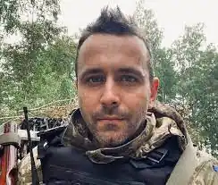

Справжнє ім'я — Артем Олександрович Чередник.
Народився 13 червня 1985 року в Черкасах. З 2002 року мешкав у Києві. З грудня 2008 року — у с. Мрин Чернігівської області. З 2012 — знову у Києві. За освітою соціолог та за фахом не працював. Має досвід роботи актором Черкаського драматичного театру, охоронцем, продавцем, промоутером, журналістом, копірайтером, художником-моделмейкером і старшим стрільцем та навідником БТР у лавах Збройних Сил України.
2007 року став переможцем другого конкурсу від видавництва "Фоліо" "Міський молодіжний роман". Окремі твори Артема Чеха були перекладені німецькою, англійською, польською, чеською, російською мовами та видані у зарубіжних періодичних виданнях та альманахах. Серед головних складових його творів: сюрреалізм, гротеск, філософія, літературні експерименти і автобіографічність. Дружина — Ірина Цілик. Син — Андрій (2010). З травня 2015 по липень 2016 — солдат Збройних Сил України. 2022 року, з початком повномасштабного вторгнення російських військ на територію України, повернувся до лав ЗСУ.